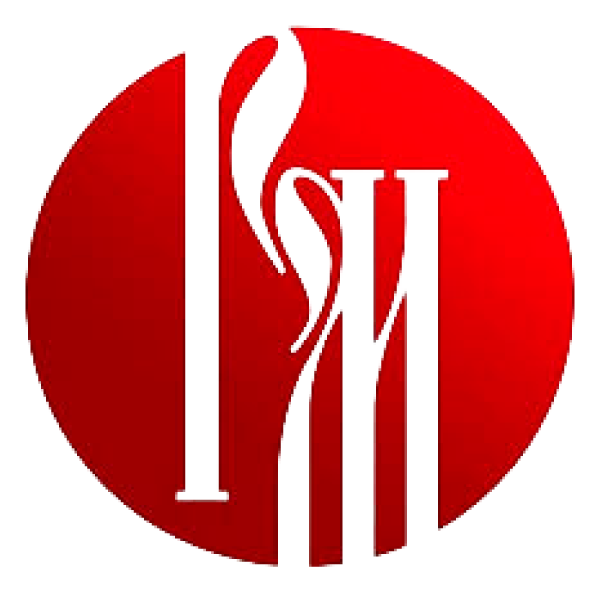
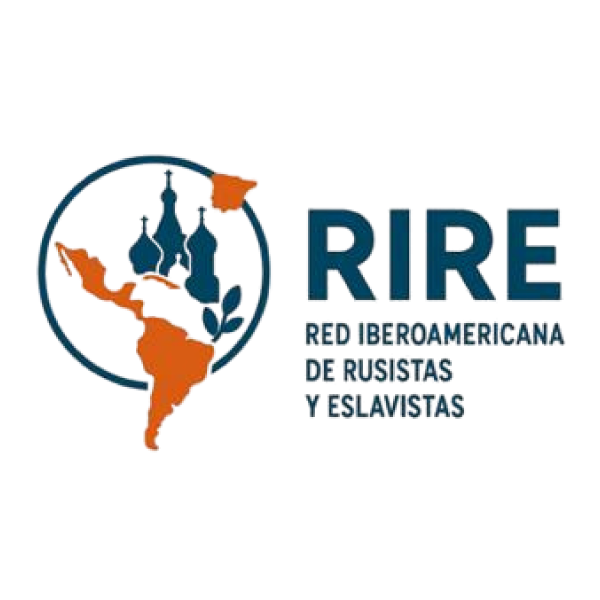
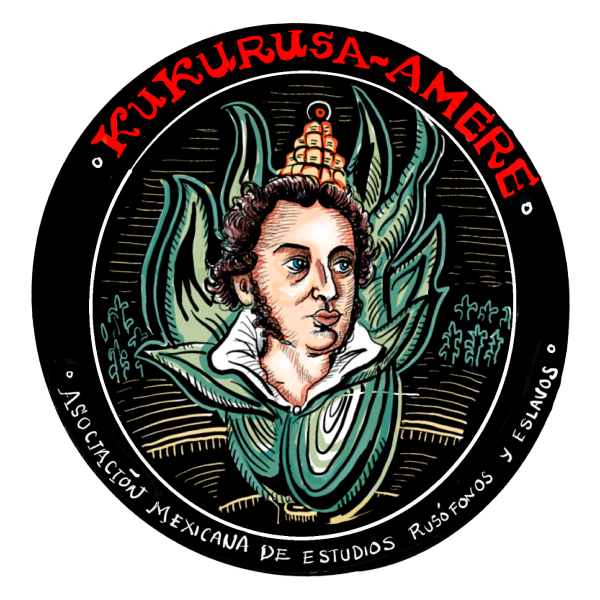
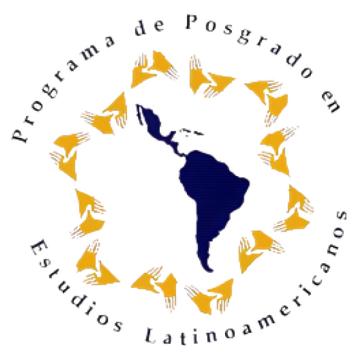
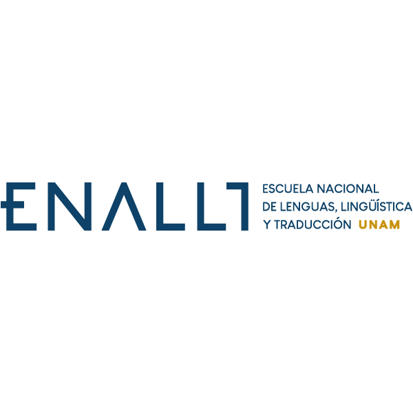

Memoria del congreso · 6 y 7 de octubre de 2026
El diálogo continúa
en imágenes.
Las ideas, las personas y los encuentros que compartimos en la UNAM. Explora los dos días del congreso a través de su memoria fotográfica.
Explorar la galeríaInstituciones organizadoras

Fondo Russkiy Mir
russkiymir.ruCreado en 2007, el Fondo Russkiy Mir es una organización estatal de la Federación de Rusia que se dedica a apoyar y promocionar la lengua rusa en el mundo, así como a reforzar su posición como lengua de comunicación internacional e instrumento clave para aumentar la relevancia de la Federación Rusa en el ámbito humanitario mundial.

Red Iberoamericana de Rusistas y Eslavistas (RIRE)
rire-es.orgLa Red Iberoamericana de Rusistas y Eslavistas (RIRE) nuclea a distintas asociaciones, agrupaciones y centros de países iberoamericanos que se dedican al estudio, enseñanza y divulgación de las múltiples dimensiones que componen la realidad de los países eslavos: idioma, cultura, arte, historia, religión. Nace del deseo de articular las diversas iniciativas nacionales que han surgido particularmente en el siglo XXI a lo largo y a lo ancho del mundo iberoamericano, donde los estudios rusos y eslavos, acaso por la primera vez en la historia, han alcanzado una madurez, un nivel y un grado de profesionalización que proyecta a sus especialistas a escala internacional.

Asociación Mexicana de Estudios Rusófonos y Eslavos (AMERE), Kukurusa
La Asociación Mexicana de Estudios Rusófonos y Eslavos es una agrupación que busca fomentar el conocimiento en México y el mundo de habla hispana de la herencia cultural de los pueblos eslavos, rusófonos y de Eurasia, así como aquellos geográfica e históricamente relacionados con ellos, mediante la promoción y difusión de las labores que en el campo de la rusística, la eslavística, el arte, la historia, el cine, las literaturas, las lenguas, la traducción, la música, las ciencias sociales, la filosofía, entre otras, realizan sus asociados, así como fomentar el conocimiento de México y su herencia cultural entre los pueblos eslavos, rusófonos y de Eurasia, aquellos geográfica e históricamente relacionados con ellos. AMERE es una asociación civil sin fines de lucro y sin fines de proselitismo partidista, político-electoral o religioso.

Programa de Posgrado en Estudios Latinoamericanos (PPEL)
latinoamericanos.posgrado.unam.mxCaracterizado por su enfoque interdisciplinario y crítico, el Programa de Posgrado en Estudios Latinoamericanos se orienta al análisis de los procesos históricos, económicos, políticos, sociales y culturales de América Latina y el Caribe. A lo largo de su historia, el Posgrado en Estudios Latinoamericanos de la UNAM se ha consolidado como uno de los referentes más importantes en América Latina para la formación de investigadores y docentes especializados en la región, manteniendo una estrecha vinculación con universidades, centros de investigación y redes académicas latinoamericanas e internacionales.

Escuela Nacional de Lenguas, Lingüística y Traducción (ENALLT)
enallt.unam.mxLa Escuela Nacional de Lenguas, Lingüística y Traducción de la UNAM se dedica a formar profesionales competentes, críticos e innovadores en la enseñanza de lenguas nacionales y extranjeras, en la lingüística aplicada y en la traducción, comprometidos con el desarrollo social y cultural de México y con los retos globales del siglo XXI. Para ello, la ENALLT impulsa la excelencia académica mediante modelos presenciales, híbridos y a distancia; promueve la certificación y actualización continua de recursos humanos; y genera investigación de calidad en lingüística, lingüística aplicada y traducción con el fin de contribuir tanto a la comunidad universitaria como a la sociedad en general. Todo lo anterior dentro en un marco de inclusión, equidad, sostenibilidad y responsabilidad social.
Programa
Convocatoria original
El congreso se celebró el 6 y 7 de octubre de 2026. Conservamos la convocatoria y la información de registro originales como archivo del evento.
En el congreso "Diálogo de dos mundos: lengua y cultura rusas en el contexto iberoamericano", que se llevará a cabo los días martes 6 y miércoles 7 de octubre de 2026, en la Unidad de Posgrado de la Universidad Nacional Autónoma de México (UNAM).
Dirigido a todos aquellos que se desempeñen profesional y académicamente en el mundo de la rusística en los países de América Latina, el Caribe, España y Portugal, el congreso "Diálogo de dos mundos: lengua y cultura rusas en el contexto iberoamericano" constituye un espacio de encuentro y visibilidad del nutrido intercambio académico y cultural entre nuestras regiones.
Invitamos a docentes, investigadores, traductores, intérpretes, especialistas y estudiantes cuyas actividades se desarrollen en los ámbitos de la lengua, literatura, cultura e historia rusas en relación con las iberoamericanas a compartir sus trabajos y experiencias en este primer congreso organizado por la Fundación Russkiy Mir y la Red Iberoamericana de Rusistas y Eslavistas. Se otorgarán constancias de participación.

Si usted está viendo la convocatoria después del 25 de julio, envíe un correo a congresosamere@gmail.com para postular y considerar su participación.